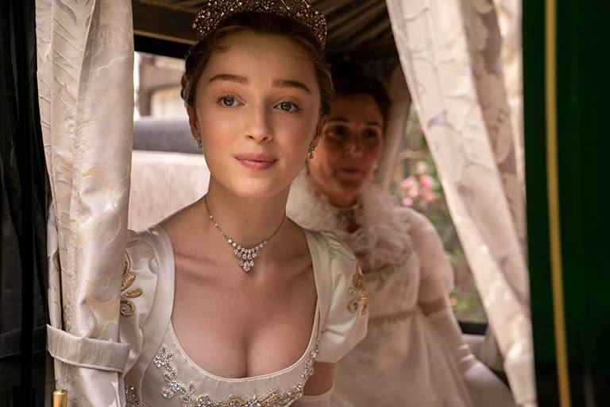

Daphne Bridgerton basset
Daphne Bridgerton é personagem da série bridgenton.
Duquesa da serie Bridgerton primeira filha a se casar protagonista da 1 Temporada onde acontece seu debute

Caracteristicas da personagem daphne
- sensata da familia
- madura
- responsavel
- inteligente
- confiavel
Suas temporadas na serie a primeira foi seu debute a sociedade
- temporada 25/12/2020
- temporada 25/03/2022
- temporada 16/05/2024
- temporada26/04/2025
Ficha técnica
cabelo loiro |
Duquesa |
21 anos |
| familia |
rica |
Britanica |
| especialidade |
calculista |
astuta |
Para saber mais visite esse link.
Site desenvolvido pelo aluno Joao Paulo araujo de melo do 2° TINF - IFTM Campus Patrocínio.